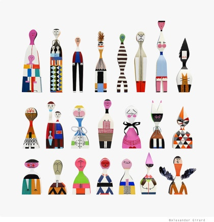

REF-WD · 이미지 1기준 이미지기준 레퍼런스
Vitra Wooden Dolls
Alexander Girard / Vitra
세트·시리즈기준 레퍼런스
사용자가 최초 제시한 기준 이미지. 기존 조사 사례의 검색 대상과 별도로, 세트감과 조형적 동질감을 판단하기 위한 기준군으로 고정했다.
사용자 첨부 이미지. 공개 이미지 출처로 대체하지 않고, 비교 기준으로만 표시한다.
세트성 읽기
연결 규칙서로 다른 인간·동물 캐릭터가 같은 목조 몸체 언어와 손으로 칠한 표면을 공유한다.
변주 축인물·동물의 정체성, 신장, 얼굴과 패턴
색상감첨부 이미지의 색상은 분류 기준에서 제외한다.
관계 유형한 작가의 인물·동물 조형군을 비교하기 위한 기준 이미지
기준군공통 몸체 언어수작업 편차
직접 분류0개 선택